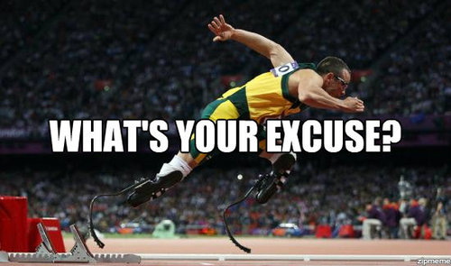

“I don’t have enough time”
The lack of time is the most common excuse for not working out, eating healthy or any activity we don’t feel particularly motivated to do. In reality, it’s just something we tell ourselves when we don’t want to feel guilty about skipping something.
Each of us have the same 24 hours, the same 7 days a week, it’s something that’s common to everyone. We have equal opportunities, how we choose to spend that time is up to ourselves. While working, I was up at 6 a.m. to begin my long commute to work and wouldn’t return until after 7 each evening, despite this, I still managed to workout 5 times per week and train with my basketball team twice per week while eating healthy, whole foods throughout. I’m not saying this to brag, but simply to show that it is possible to do by prioritising.
Prioritise:

If you take a step back and honestly evaluate how important each activity that you do in your day is, you’ll find enough time to complete everything that is of importance to you, and more! Take, for example, that hour that you watch television or that time on your computer and relocate it into something more physically beneficial. Ask yourself how important your health is to you?
- Is it more important than that sleep in?
- More important than wanting to go out?
- More important than having more junk food?
No longer should you use the phrase “I don’t have enough time” instead, it should be replaced with “It’s not a priority for me at the moment”. Once you spend time defining your priorities, it makes it much easier to put a timeline in place to make it possible for you to complete those priorities while eliminating the distractions.
Work, friends and family are all important, but you need to prioritise your priorities and love yourself enough to invest the time in you.